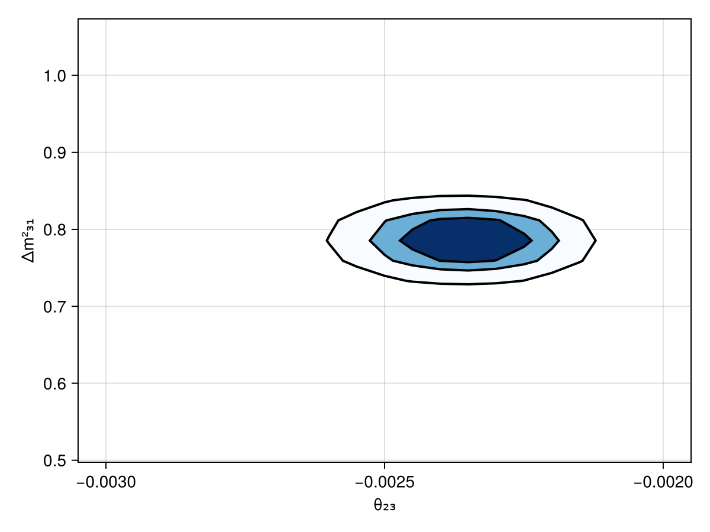

First steps
This section provides a simple starting example to give you a basic idea of how the Newtrinos.jl package works. It is NOT thought as a tutorial. We just want to guide you through how it basically works and is structured. Like riding a bike for the first time, but with training wheels.
Structure of the package
The Newtrinos.jl architecture is organized into three orthogonal layers:
- Physics layer: configure the theoretical physics models
- Experiment layer: configure the experimental likelihoods
- Analysis layer: analyse the data from the given experiments for a given physics model
Each layer treats the other layers as black boxes. This way, the package allows a flexible composition for statistical analysis of neutrino data.
Example:
In this first example we define a physics model that contains decoherent neutrino propagation, standard matter interactions, and uses the inverted mass ordering. As experiment we choose the IceCube deepcore neutrino experiment. We want to evaluate the log-likelihood for this case.
Load the package:
If Newtrinos.jl is not installed yet on your machine you need to install it first. You can find the installation instructions here. If it's already installed load the package via:
using Newtrinos
using DensityInterface #need this for calculating the log-likelihood laterConfigure the physics model:
We want now to specify the physics model we want to investigate.
Newtrinos.osc.OscillationConfig(...) creates an oscillation configuration by combining a flavour model, propagation model, eigenstate selection strategy, interaction model, and eigendecomposition algorithm. Calling it without arguments returns the default configuration (3-flavour, vacuum interactions, basic propagation, all states, default eigendecomposition).
osc_cfg = Newtrinos.osc.OscillationConfig(
flavour = Newtrinos.osc.ThreeFlavour(ordering=:IO), # use inverted mass ordering
propagation = Newtrinos.osc.Decoherent(), # use decoherent propagation
interaction = Newtrinos.osc.SI(), # use standard MSW effect
)Then use Newtrinos.osc.configure(oscillation_config) to pass all relevant parameters, priors, matrices from the configuration into the Osc struct, i.e. Create a fully configured oscillation physics model from the given configuration.
osc_model = Newtrinos.osc.configure(osc_cfg)Assemble the full physics model by combining the oscillation model with flux models, earth/matter models, and cross-section models.
atm_flux = Newtrinos.atm_flux.configure() # atmospherical flux
earth_layers = Newtrinos.earth_layers.configure() # earth layer density model
xsec = Newtrinos.xsec.configure() # standard cross section model
physics = (; osc=osc_model, atm_flux, earth_layers, xsec)Configure the experiment:
The experiments are all configured in the source code and all you need to do is to pass a physics module. Each experiment extracts whatever part of the physics module it needs. While Reactor experiments only use the oscillation model, atmospherical neutrino experiments need the full physics model.
We pass the physics module to an experiment via the configure method of each experiment. Without specifying a physics module, the default physics is used for the experiment configuration.
exp = Newtrinos.deepcore.configure(physics)
experiments = (; deepcore = exp)Now this returns a struct containing physics models, parameters, priors, data assets, and a forward model. Since the Analysis methods require a NamedTuple of experiment structs the exp is organized into a NamedTuple in the second line.
Evaluate the likelihood
Extract parameters and evaluate the likelihood:
params = Newtrinos.get_params(experiments)
priors = Newtrinos.get_priors(experiments)
likelihood = Newtrinos.generate_likelihood(experiments)Quick likelihood scan
We can span a 2D grid of $\theta_{23}$ and $\Delta m^2_{31}$ values and evaluate the likelihood at each grid-point while keeping the other parameters at their default values.
using DataStructures
vars_to_scan = OrderedDict(:Δm²₃₁ => 21, :θ₂₃ => 21) #21 x 21 scanpoints
result = Newtrinos.scan(likelihood, priors, vars_to_scan, params)We can also plot a CL contour plot with the built-in plot function of Newtrinos.jl.
using CairoMakie
fig = Figure()
ax = Axis(fig[1, 1], xlabel="θ₂₃", ylabel="Δm²₃₁")
plot!(ax, result, levels=[0, 0.68, 0.9, 0.99], filled=true, color=:black, cmap=Reverse(:Blues))
fig
Next Step
Go to the tutorials and work through the features in more detail to understand how the package works and to be able to do own analyses with Newtrinos.jl